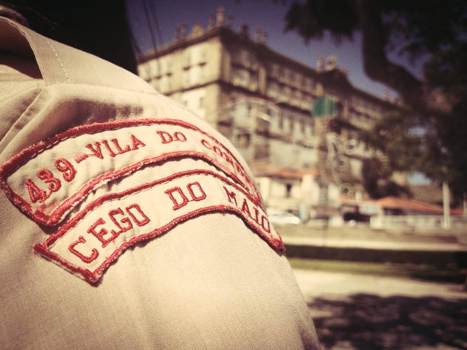
São João Baptista de Vila do Conde — Desde 1975, a formar jovens para a vida através da aventura, do serviço e da amizade.
As últimas novidades do nosso agrupamento
Quatro faixas etárias, quatro grandes aventuras. Descobre a tua.
Alcateia nº 164 – S. Francisco de Assis
A Alcateia nº 164 – S. Francisco de Assis é o primeiro passo no escutismo. Aqui os mais novos aprendem, brincam e crescem através do imaginário do Livro da Selva de Rudyard Kipling, desenvolvendo valores como a amizade, a partilha e o respeito pela natureza.
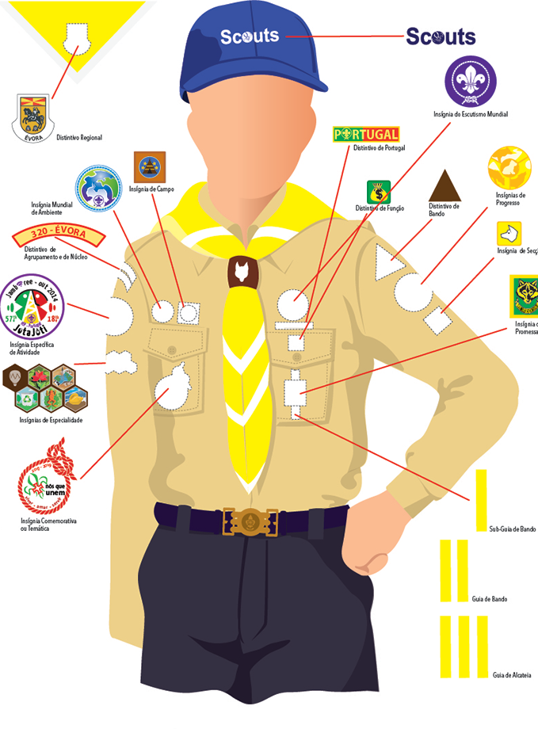
Grupo Explorador nº 164 – São João Baptista
O Grupo Explorador nº 164 – São João Baptista é a secção da aventura. As patrulhas exploram, constroem, acampam e percorrem os Caminhos de Santiago. É a idade das grandes expedições e das primeiras responsabilidades.
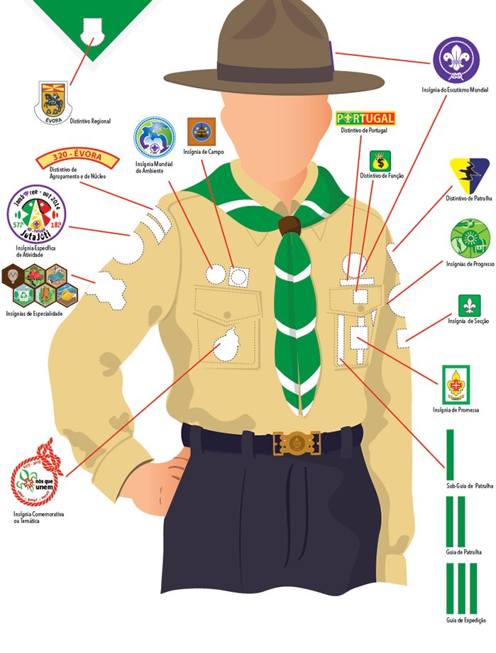
Grupo Pioneiro nº 164 – Nª Srª da Guia
O Grupo Pioneiro nº 164 – Nª Srª da Guia é o lugar do empreendedorismo. Os jovens assumem projetos, servem a comunidade e constroem o seu caminho pessoal. Aceita o desafio!
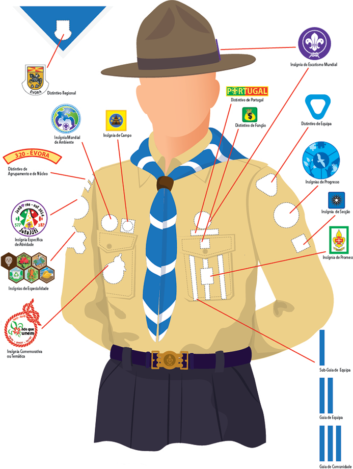
Clã nº 107 – São Nuno de Santa Maria
O Clã nº 107 – São Nuno de Santa Maria é o objetivo do Homem Novo. Os caminheiros vivem em serviço à comunidade e ajudam as secções mais novas. São os futuros líderes do agrupamento.
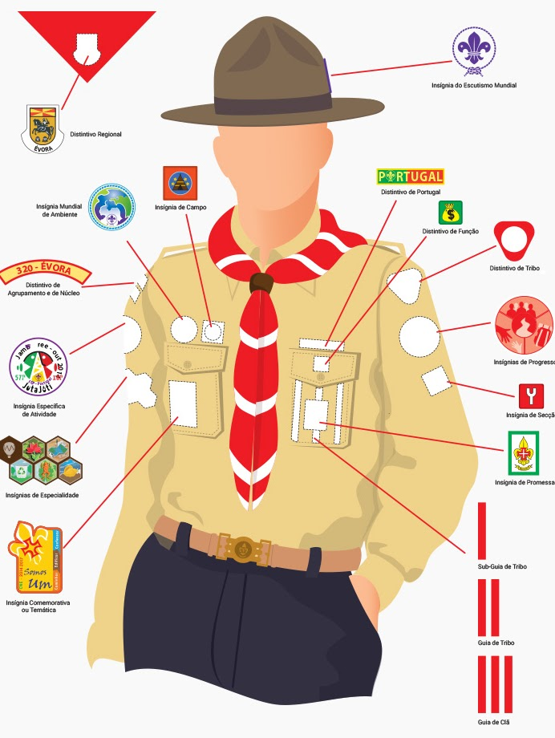
Descobre o que temos vivido e o que aí vem
50 anos de aventura, serviço e amizade
Recortes de notícias e memórias de outros tempos
Escuteiros de todo o mundo que já passaram pela nossa "casa".
Os hinos e canções do nosso agrupamento
Escola dos Sininhos — Rua 5 de Outubro, 665, Vila do Conde
“O Acampamento é o local mais amigável do mundo”
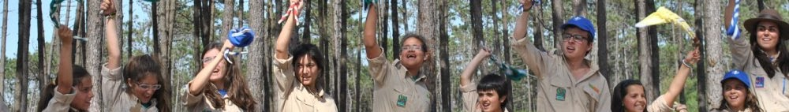
Alguém me perguntou: "Porque desperdiças o teu tempo e energia para ter os teus filhos nos escuteiros, e fazer atividades e acampamentos?"
A minha resposta foi:
Não pago pelas atividades escutistas, porque os seus Dirigentes são voluntários que oferecem o seu tempo, carinho e paciência. Obrigado pelas oportunidades oferecidas, dando-lhes a possibilidade de dar valor à vida, construindo um mundo melhor.
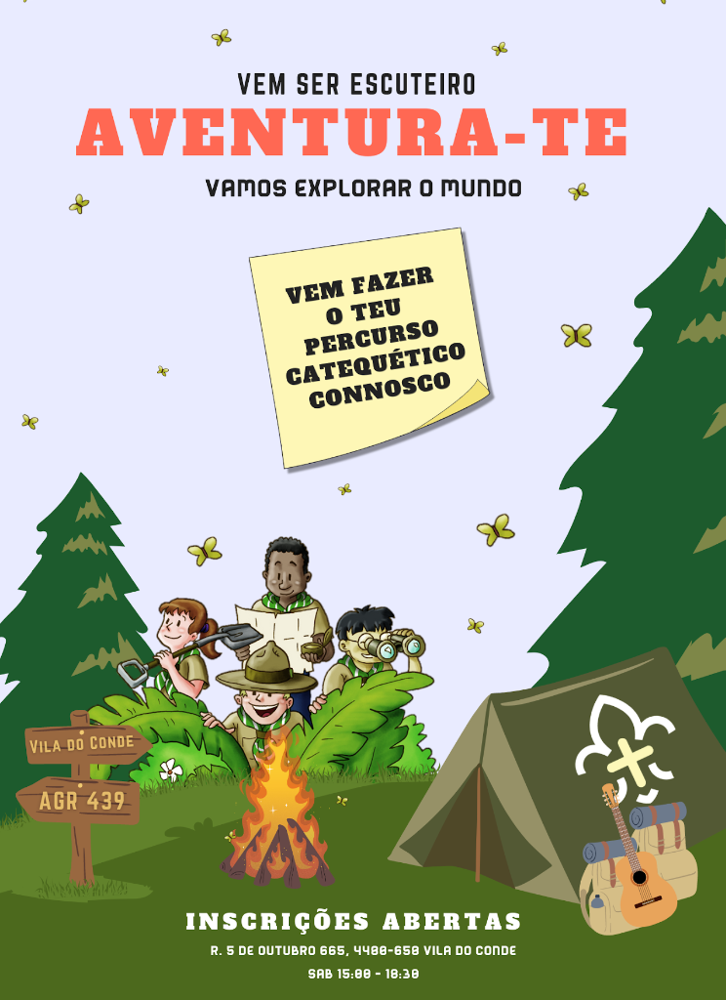
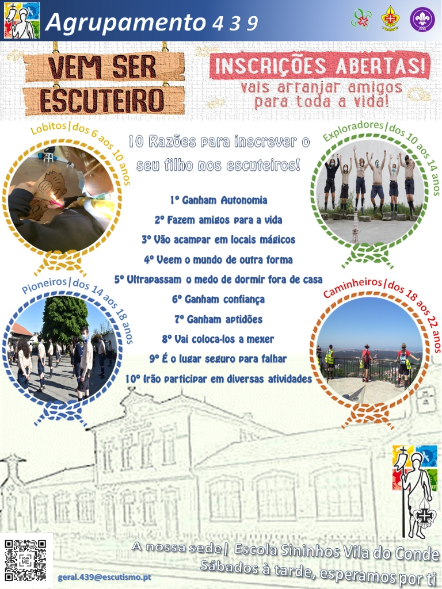
Acede num ficheiro prático a toda a apresentação resumida do Agrupamento.
⬇️ Descarregar PDFO acampamento constrói amizades fortes.
Abre horizontes para novas ideias.
A receita perfeita para um bom momento.
Liderança, primeiros socorros, ou canoagem.
Descobrem o erro e superam limitações.
Aprendem agindo e desenrascando-se.
Fazem no campo o que sonhavam ao inscrever-se.
Mais saudável do que qualquer atividade de ecrã.
Ultrapassam medos e colecionam vitórias.
Têm apoio para lidar com medos e distância de casa.
Desliza para explorar os detalhes da vida de um escuteiro.
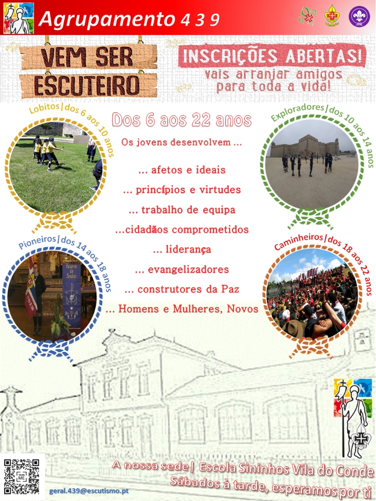
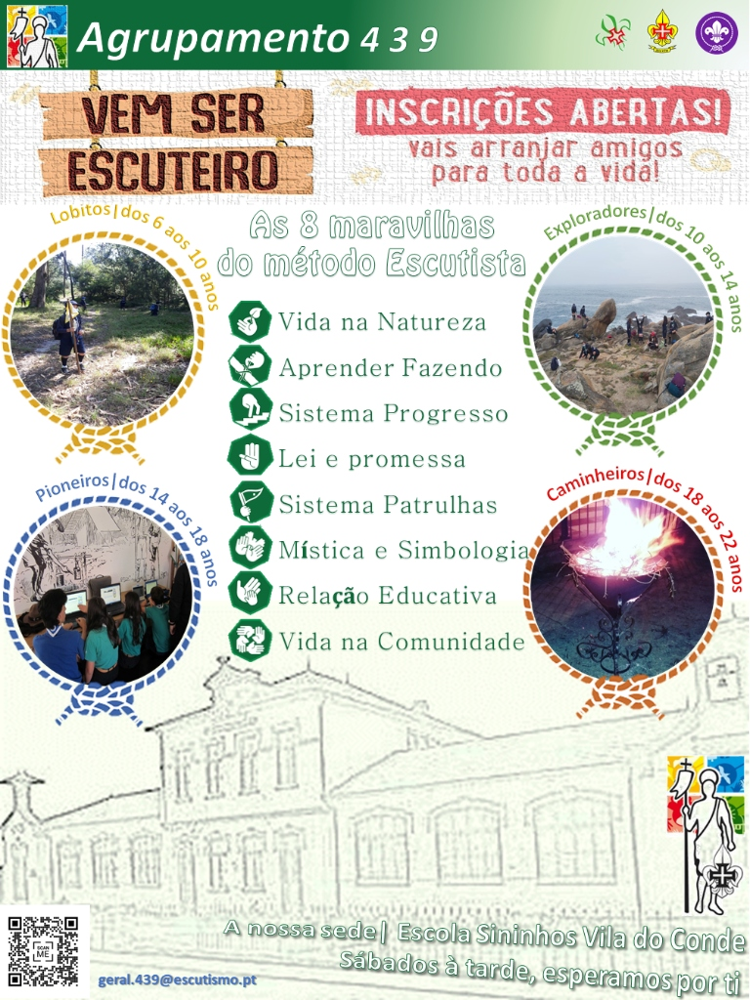
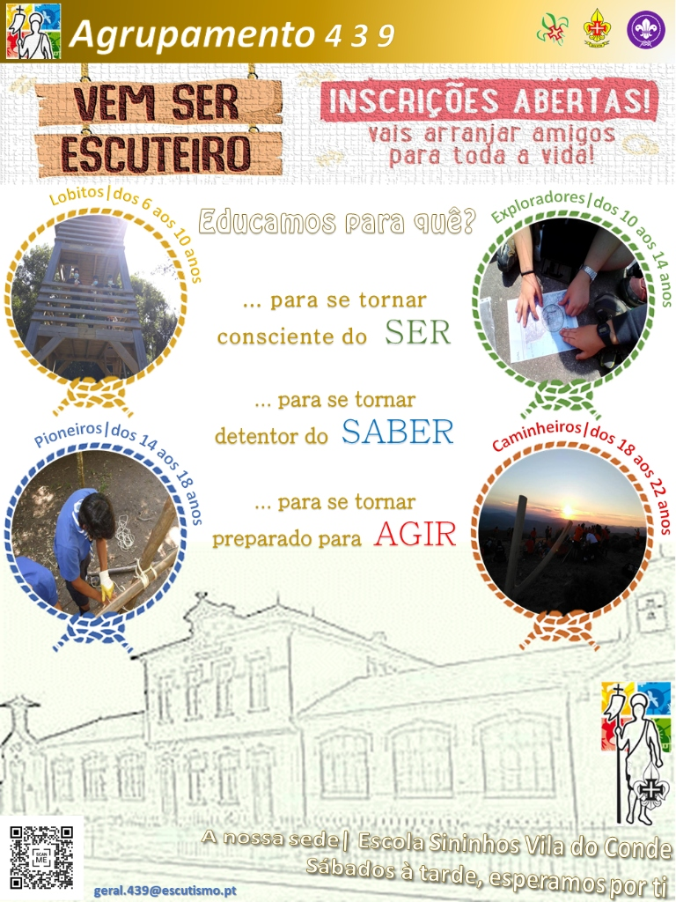
O nosso Agrupamento e tudo o que precisa de saber sobre Vila do Conde e o Escutismo.
Rua 5 de Outubro, Nº 665-667
4480-477 Vila do Conde
Sábados 15h - 18h (Set. a Jul.)
Progresso e Especialidades Escutistas
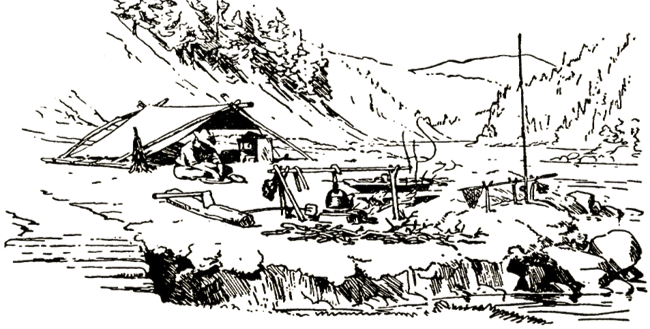
«Tenta deixar o mundo um pouco melhor do que o encontraste.»